Seus Núcleos
Lista, capa e papel do vínculo.
1440 px
390 px
Diálogo Começar com intenção
Criar Núcleo abre a escolha de vínculo ou convite.
1440 px
390 px
Início do Núcleo
Identidade do Núcleo, Agenda, Núcleos e Acordos.
1440 px
390 px


Diálogo Editar nome
Administradores editam e confirmam a mudança.
1440 px


390 px


Diálogo Editar propósito
Administradores editam o propósito. O teste cobre rascunho durante atualização entre sessões.
1440 px


390 px

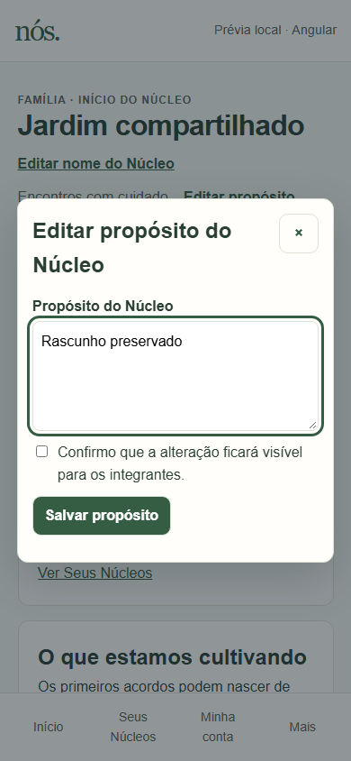

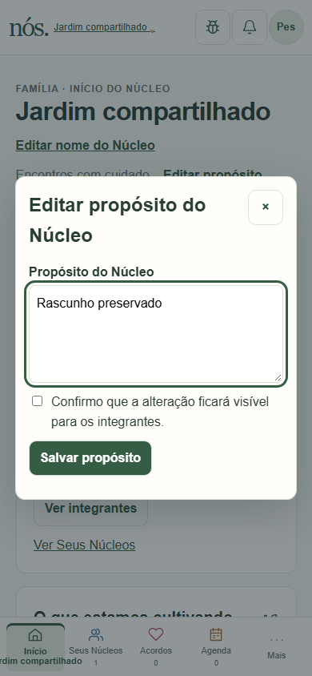

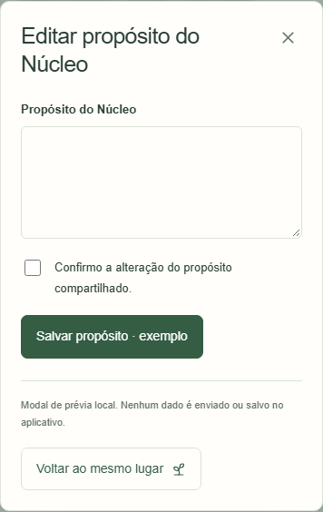
Integrantes do Núcleo
Ver integrantes abre a lista. Escolher o nome abre os detalhes.
1440 px


390 px


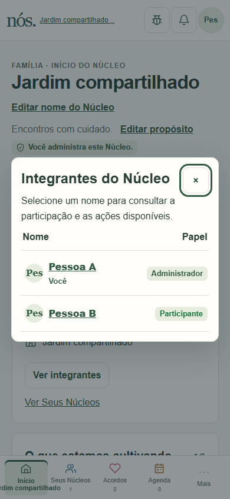

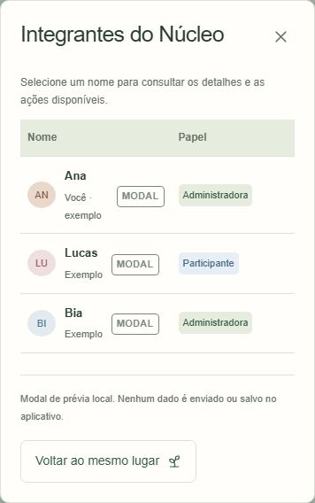
Diálogo Participação
Ações dependem do papel e da pessoa selecionada. Nomeação exige aceite.
1440 px


390 px


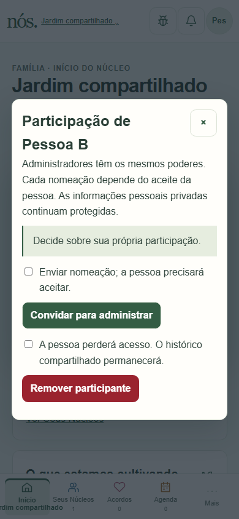

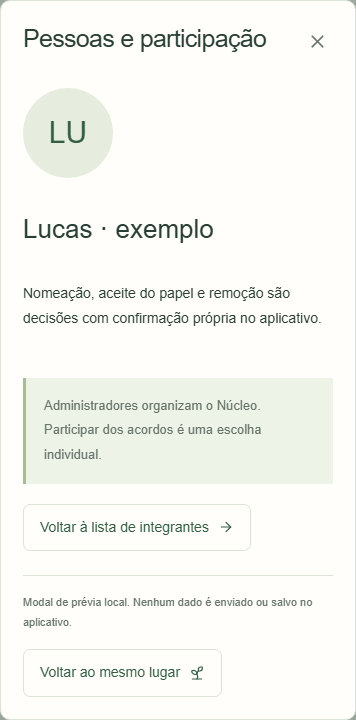
Sair de um Núcleo
O atalho abre a preferência de autoria na Conta.
1440 px


390 px

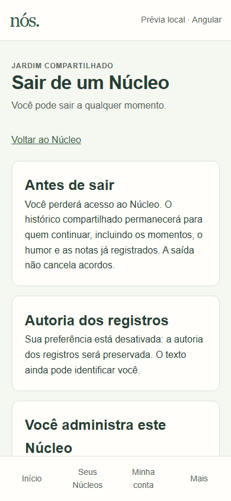

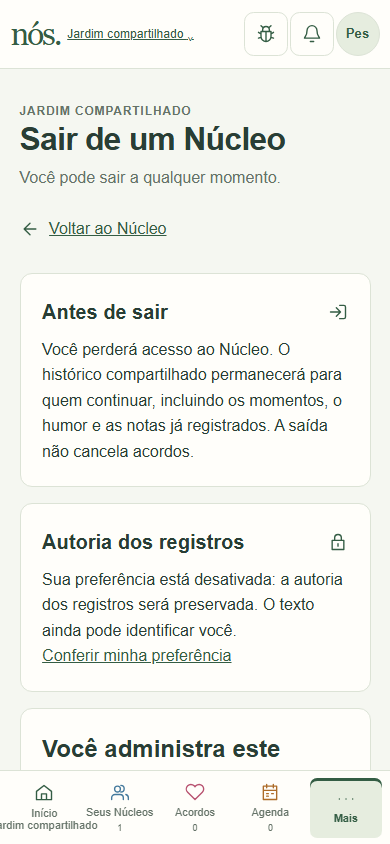

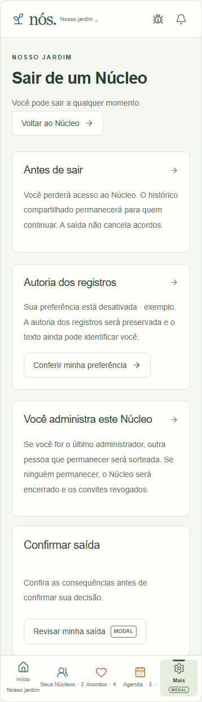
Diálogo Revisar minha saída
A pessoa confirma a consequência antes de sair. Fechar retorna à revisão.
1440 px


390 px

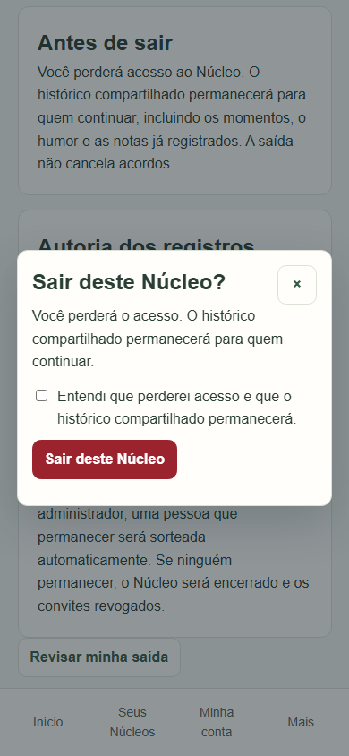

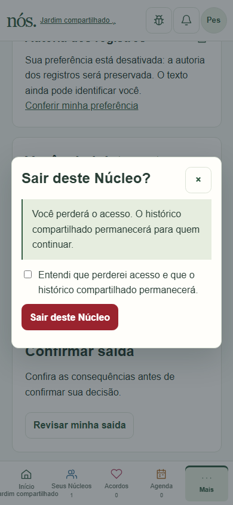

Diálogo Encerrar Núcleo
A administração digita o nome atual e confirma. Fechar preserva o Núcleo.